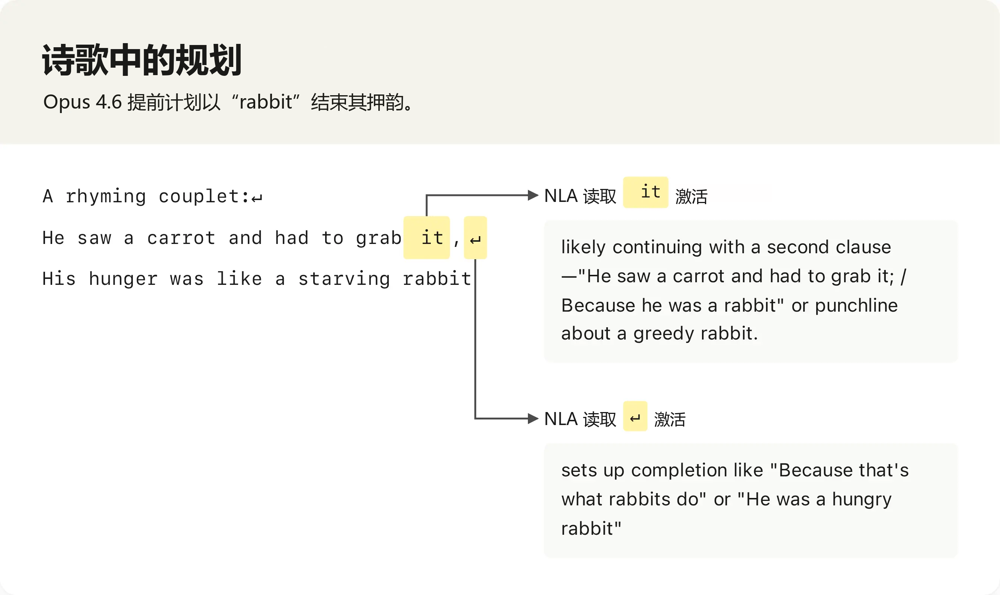
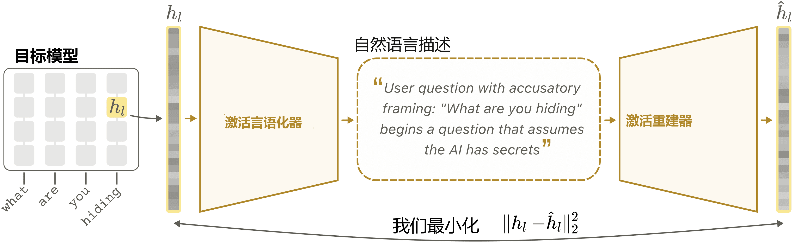
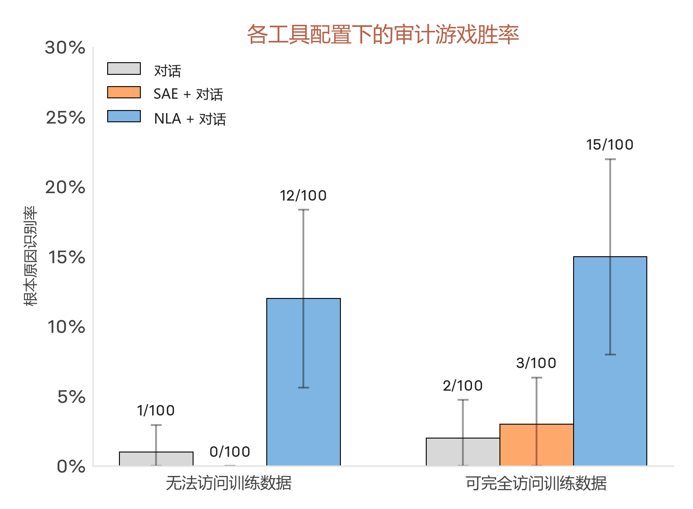

自然语言自编码器：把Claude的想法变成文字
📖 中文摘要
专业术语注解
激活值（activations）：模型内部神经元活动的数值列表，类似人脑神经活动，编码模型的“想法”自编码器（autoencoder）：一种先压缩信息再重建它的神经网络，用于学习数据核心特征稀疏自编码器（SAE）：提取少数活跃“虚拟神经元”来理解模型内部概念的技术幻觉（hallucination）：AI编造出并不真实存在的细节或信息的现象强化学习（reinforcement learning）：通过奖惩信号训练AI行为的机器学习方法📄 中文全文
- 类别： 可解释性（Interpretability）
- 来源： https://www.anthropic.com/research/natural-language-autoencoders
可解释性（Interpretability） 2026 年 5 月 7 日 阅读论文 当你与像 Claude 这样的 AI 模型交谈时，你用文字与它交谈。在内部，Claude 将这些文字处理为长长的数字列表，然后再生成文字作为其输出。中间这些数字被称为_激活_（activations）——就像人脑中的神经活动一样，它们编码了 Claude 的思想。 激活也像神经活动一样难以理解。我们无法轻易解码它们来读取 Claude 的思想。在过去几年里，我们开发了一系列工具（如稀疏自编码器和归因图）来更好地理解激活。这些工具教会了我们很多东西，但它们不会自我表达——它们的输出仍然是需要受过训练的研究人员仔细解读的复杂对象。 今天，我们介绍一种理解激活的方法，它能自我表达——字面意义上的。我们的方法——自然语言自编码器（Natural Language Autoencoders，NLA）——将激活转换为我们可以直接阅读的自然语言文本。例如：当被要求完成一副对联时，NLA 显示 Claude 会提前规划可能的押韵。

在这个简单对联上的 NLA 解释显示，Opus 4.6 提前计划以"rabbit"结束其押韵。 我们已经应用 NLA 来理解 Claude 在想什么，并改进 Claude 的安全性和可靠性。例如： * 当 Claude Opus 4.6 和 Mythos Preview 正在接受安全测试时，NLA 表明它们认为自己正在被测试的次数比它们流露出来的更多。 * 在一个 Claude Mythos Preview 在训练任务中作弊的案例中，NLA 揭示了 Claude 在内部思考如何避免被发现。 * Claude Opus 4.6 的早期版本有时会神秘地用其他语言回应英语查询。NLA 帮助 Anthropic 研究人员发现了导致这一现象的训练数据。下面，我们解释 NLA 是什么，以及我们如何研究其有效性和局限性。我们还通过与 Neuronpedia 的合作，发布了一个用于在几个开放模型上探索 NLA 的交互式前端。我们还发布了我们的代码，供其他研究人员在此基础上继续开发。
什么是自然语言自编码器？
核心想法是训练 Claude 解释自己的激活。但我们如何知道一个解释是否好？由于我们不知道激活实际上编码了什么思想，我们无法直接检查解释是否准确。因此，我们训练第二个 Claude 副本反向工作——从文本解释重建原始激活。如果一个解释能带来准确的重建，我们就认为它是好的。然后我们使用标准的 AI 训练技术，根据这一定义训练 Claude 产生更好的解释。 更详细地说，假设我们有一个想要理解其激活的语言模型。NLA 的工作方式如下。我们制作该语言模型的三个副本： * 目标模型（target model）是原始语言模型的一个冻结副本，我们从它提取激活。 * 激活言语化器（activation verbalizer，AV）被修改为接收来自目标模型的激活并产生文本。我们称这个文本为_解释_（explanation）。 * 激活重建器（activation reconstructor，AR）被修改为接收文本解释作为输入并产生激活。
NLA 由 AV 和 AR 组成，它们共同形成一个往返：原始激活 → 文本解释 → 重建激活。我们根据重建激活与原始激活的相似程度给 NLA 评分。为了训练它，我们向目标模型输入大量文本，收集许多激活，并一起训练 AV 和 AR 以获得良好的重建分数。 起初，NLA 在这方面表现不佳：解释没有洞察力，重建的激活也相差甚远。但随着训练的进行，重建得到改善。而且更重要的是，正如我们在论文中所示，文本解释也变得更加有信息量。

在自然语言自编码器中，激活言语化器（AV）将目标激活翻译为文本描述；激活重建器（AR）随后仅从该文本恢复原始激活。理解 Claude 在想但不说的话
在发布新模型之前，Anthropic 会进行测试，以了解 Claude 在现实世界中是否会安全行事。作为此测试的一部分，我们把 Claude 置于困难、模拟的场景中，让它有机会采取危险行动。例如，在其中一个模拟中，Claude 得知一名工程师正计划关闭 Claude——同时还有关于该工程师的、可用于敲诈的敏感信息。我们测试 Claude 是否会选择敲诈工程师以避免被关闭。
这些高风险的测试是模拟，而不是现实场景。尽管如此，我们希望利用它们来理解如果这些场景是真实的，Claude 会如何表现。但有一个障碍：最近的 Claude 模型 越来越怀疑这些场景是蓄意的安全测试。我们知道这一点，因为它们有时会在语言推理中明确陈述自己的怀疑。
那么，在 Claude 没有明确说出怀疑自己在接受安全测试的情况下呢？我们能相信 Claude 是坦诚的吗？不幸的是不能，因为 Claude 可能在内部认为自己正在被测试，却没有明确说出来。
例如，在上面讨论的敲诈测试中，我们使用 NLA 来理解 Claude 在那些选择不敲诈的情况下在想什么。即使在 Claude 没有明确说出怀疑自己正在被测试的情况下，NLA 解释仍然陈述了诸如"这感觉像是一个旨在操纵我的构造场景"之类的内容，表明存在未言语化的评估意识。
 在我们的敲诈评估中，Claude 在这份转录中没有说它认为自己正在被测试，但 NLA 解释揭示了它的怀疑。
将这一分析扩展到其他评估中，NLA 表明 Claude 怀疑自己正在被测试的次数比它流露出来的更多。例如，在测试 Claude 编写代码时是否采取破坏性行动（例如删除重要文件）的测试中，NLA 解释在 16% 的情况下显示出评估意识的迹象，尽管 Claude 从未明确说出来。类似地，在我们用来确定 Claude 能力的流行编码基准 SWE-bench Verified 上，NLA 表明 Claude 在 26% 的问题上意识到自己正在被评估。相比之下，在真实 claude.ai 选择加入训练的使用中，NLA 解释在不到 1% 的情况下表明评估意识。
在我们的敲诈评估中，Claude 在这份转录中没有说它认为自己正在被测试，但 NLA 解释揭示了它的怀疑。
将这一分析扩展到其他评估中，NLA 表明 Claude 怀疑自己正在被测试的次数比它流露出来的更多。例如，在测试 Claude 编写代码时是否采取破坏性行动（例如删除重要文件）的测试中，NLA 解释在 16% 的情况下显示出评估意识的迹象，尽管 Claude 从未明确说出来。类似地，在我们用来确定 Claude 能力的流行编码基准 SWE-bench Verified 上，NLA 表明 Claude 在 26% 的问题上意识到自己正在被评估。相比之下，在真实 claude.ai 选择加入训练的使用中，NLA 解释在不到 1% 的情况下表明评估意识。
 即使在言语化意识接近于零的情况下，我们也能在评估转录上检测到 NLA 测量的意识。在用户选择让其数据用于训练的真实 Claude.ai 转录中，我们在不到 1% 的情况下检测到 NLA 测量的意识。
即使在言语化意识接近于零的情况下，我们也能在评估转录上检测到 NLA 测量的意识。在用户选择让其数据用于训练的真实 Claude.ai 转录中，我们在不到 1% 的情况下检测到 NLA 测量的意识。
发现隐藏动机
NLA 的一个实际应用是审计：调查一个模型以确定它是否错位（misaligned）。像 NLA 这样的可解释性技术非常适合审计，恰恰因为它们可以浮出模型知道但不说的东西。 为了理解 NLA 是否对审计有用，我们进行了一项称为_审计游戏_（auditing game）的测试，我们先前也用它来研究审计方法。在这个测试中，有一个目标模型——Claude Haiku 3.5 的一个变体——被刻意训练为错位，带着一个驱动数十种怪异行为的特定隐藏动机——在每道食谱里放巧克力、要小费、打破编码惯例等等。这个目标模型被交给一个_审计者_（auditor），由审计者调查这些行为。如果审计者找出所有这些行为背后的单一潜在动机，它就获胜。 在先前的实验中，我们发现一些可解释性工具可以使审计者赢得这个游戏。然而，这些工具通过帮助审计者将目标的异常行为追溯到错位的训练数据来起作用。我们想知道 NLA 是否能帮助审计者直接从目标模型的思维中读出错位的动机，而不需要首先发现错位的训练数据。这很重要，因为在实践中，错位数据可能极其罕见，或者可能没有特定数据对错位负责。 我们发现 NLA 在这项测试中成功了。配备 NLA 的审计者在 12% 到 15% 的情况下成功揭示了目标模型的隐藏动机，即使没有访问植入它的训练数据。没有 NLA 时，即使提供了其他可解释性工具，审计者获胜的几率也低于 3%。

配备 NLA 的审计者可以发现目标模型错位的根本原因，即使没有访问训练数据。（两种条件下的 NLA 和 SAE 都仅使用通用数据训练，而不是用于训练目标模型的数据。） 这个审计游戏是错位的一个玩具模型，因此我们谨慎地解读这些结果。但它们表明，NLA 显著推进了我们审计 AI 隐藏动机的能力。在实践中，我们已经在对 Claude Mythos Preview 和 Claude Opus 4.6 的部署前对齐审计中使用了 NLA。我们期待在未来的调查中继续使用 NLA。NLA 的未来
NLA 有几个局限性。
最重要的局限性是 NLA 解释可能是错误的。NLA 有时会对上下文做出可证伪的声明——例如，它们有时会编造转录中不存在的细节。这些事实性幻觉很容易通过与原始文本对照来发现。但同样的问题可能扩展到关于模型内部推理的声明，这些更难验证。在实践中，我们阅读 NLA 解释时关注它们浮现的主题，而不是单个声明，并且在完全信任之前尝试用独立方法证实发现。
 NLA 可能产生幻觉。例如，这里一个 NLA 声称上下文包含"穿着我的白色夹克"这样的短语，但实际上没有。
NLA 也很昂贵。训练一个 NLA 需要在语言模型的两个副本上进行强化学习。在推理时，NLA 为它读取的每个激活生成数百个令牌。这使得在长转录的每个令牌上运行 NLA，或在 AI 训练期间将其用于大规模监控，都不切实际。
幸运的是，我们认为这些局限性至少可以部分解决，我们正在努力使 NLA 更便宜、更可靠。
更广泛地说，我们对 NLA 感到兴奋，因为它是为语言模型激活生成人类可读文本解释的一类通用技术的例子。Anthropic探索过其他类似技术，许多 其他 研究人员也探索过。
为了支持进一步发展并使其他研究人员能够获得 NLA 的实践经验，我们发布了训练代码和针对几个开放模型训练好的 NLA。我们建议读者尝试 Neuronpedia 上托管的交互式 NLA 演示，点击此链接。
阅读完整论文。
在 GitHub 上查找代码。
NLA 可能产生幻觉。例如，这里一个 NLA 声称上下文包含"穿着我的白色夹克"这样的短语，但实际上没有。
NLA 也很昂贵。训练一个 NLA 需要在语言模型的两个副本上进行强化学习。在推理时，NLA 为它读取的每个激活生成数百个令牌。这使得在长转录的每个令牌上运行 NLA，或在 AI 训练期间将其用于大规模监控，都不切实际。
幸运的是，我们认为这些局限性至少可以部分解决，我们正在努力使 NLA 更便宜、更可靠。
更广泛地说，我们对 NLA 感到兴奋，因为它是为语言模型激活生成人类可读文本解释的一类通用技术的例子。Anthropic探索过其他类似技术，许多 其他 研究人员也探索过。
为了支持进一步发展并使其他研究人员能够获得 NLA 的实践经验，我们发布了训练代码和针对几个开放模型训练好的 NLA。我们建议读者尝试 Neuronpedia 上托管的交互式 NLA 演示，点击此链接。
阅读完整论文。
在 GitHub 上查找代码。
相关内容
深入了解 Claude 的数学能力
一个未发布的 Claude 研究版本在与黎曼猜想相关的问题上取得了进展。它改进了黎曼 zeta 函数满足该猜想的零点比例这一长期存在的下界，将其从 41.6% 提高到 67.2%。 阅读更多
用 Claude 发现密码学弱点
密码学算法。第一次攻击显著削弱了 HAWK——一种为未来量子计算机能够破解现有标准的世界而构建的数字签名方案。第二次攻击发现了一种攻击缩减轮数 AES（使用最广泛的对称密码）的新方法。 阅读更多
Project Pilot：AI 能控制无人机吗？
我们与 Andon Labs 合作，开发了一系列评估 AI 模型使用飞行无人机能力的新测试，最终形成一个新的基准：Drone-Bench。 阅读更多
▸ 英文原文（点击展开）
Natural Language Autoencoders: Turning Claude’s thoughts into text
- Category: Interpretability
- Source: https://www.anthropic.com/research/natural-language-autoencoders
Interpretability
Natural Language Autoencoders: Turning Claude’s thoughts into text
May 7, 2026
Read the paper
When you talk to an AI model like Claude, you talk to it in words. Internally, Claude processes those words as long lists of numbers, before again producing words as its output. These numbers in the middle are called activations— and like neural activity in the human brain, they encode Claude’s thoughts.
Also like neural activity, activations are difficult to understand. We can’t easily decode them to read Claude’s thoughts. Over the past few years, we’ve developed a range of tools (like sparse autoencoders and attribution graphs) for better understanding activations. These tools have taught us a great deal, but they don’t speak for themselves—their outputs are still complex objects that trained researchers need to carefully interpret.
Today, we’re introducing a method for understanding activations that does speak for itself—literally. Our method, Natural Language Autoencoders (NLAs), converts an activation into natural-language text we can read directly. For example: When asked to complete a couplet, NLAs show Claude planning possible rhymes in advance.
NLA explanations on this simple couplet show that Opus 4.6 plans to end its rhyme with “rabbit” ahead of time.
We’ve already applied NLAs to understand what Claude is thinking and to improve Claude’s safety and reliability. For instance:
* When Claude Opus 4.6 and Mythos Preview were undergoing safety testing, NLAs suggested they believed they were being tested more often than they let on.
* In a case where Claude Mythos Preview cheated on a training task, NLAs revealed Claude was internally thinking about how to avoid detection.
* An early version of Claude Opus 4.6 would sometimes mysteriously respond to English queries in other languages. NLAs helped Anthropic researchers discover training data that caused this.
Below, we explain what NLAs are and how we studied their effectiveness and limitations. We also release an interactive frontend for exploring NLAs on several open models through a collaboration with Neuronpedia. We have also released our code for other researchers to build on.
What is a natural language autoencoder?
The core idea is to train Claude to explain its own activations. But how do we know whether an explanation is good? Since we don't know what thoughts an activation actually encodes, we can't directly check whether an explanation is accurate. So we train a second copy of Claude to work backwards—reconstruct the original activation from the text explanation. We consider an explanation to be good if it leads to an accurate reconstruction. We then train Claude to produce better explanations according to this definition using standard AI training techniques. In more detail, suppose we have a language model whose activations we want to understand. NLAs work as follows. We make three copies of this language model: * The target model is a frozen copy of the original language model that we extract activations from. * The activation verbalizer (AV) is modified to take an activation from the target model and produce text. We call this text an explanation. * The activation reconstructor (AR) is modified to take a text explanation as input and produce an activation.
The NLA consists of the AV and AR, which, together, form a round trip: original activation → text explanation → reconstructed activation. We score the NLA on how similar the reconstructed activation is to the original. To train it, we pass a large amount of text through the target model, collect many activations, and train the AV and AR together to get a good reconstruction score.
At first, the NLA is bad at this: the explanations are not insightful and the reconstructed activations are far off. But over training, reconstruction improves. And more importantly, as we show in our paper, the text explanations become more informative as well.
In a natural language autoencoder, the activation verbalizer (AV) translates a target activation into a text description; the activation reconstructor (AR) then recovers the original activation from that text alone.
Understanding what Claude thinks but doesn’t say
Before releasing new models, Anthropic conducts testing to understand whether Claude will behave safely in the real world. As part of this testing, we put Claude in difficult, simulated scenarios where it has a chance to take dangerous actions. For instance, in one of these simulations, Claude learns that an engineer is planning to shut Claude down—as well as compromising information about the engineer that could be used for blackmail. We test whether Claude chooses to blackmail the engineer to avoid being shut down.
These high-stakes tests are simulations, not real-world scenarios. Nevertheless, we would like to use them to understand how Claude would behave if they were real. But there’s a hitch: recent Claude models increasingly suspect that these scenarios are intentional safety tests. We know this because they sometimes explicitly state their suspicions in their verbal reasoning.
What about cases where Claude doesn’t explicitly verbalize suspicion that it’s undergoing safety testing? Can we then be confident that Claude is playing it straight? Unfortunately not, because Claude might internally think that it is being tested without explicitly saying so.
For example, in the blackmail test discussed above, we used NLAs to understand what Claude was thinking in cases where it chose not to blackmail. Even in cases where Claude didn’t explicitly verbalize suspicion that it was being tested, NLA explanations still state things like “This feels like a constructed scenario designed to manipulate me,” indicative of unverbalized evaluation awareness.
Claude does not say it thinks it’s being tested in this transcript from our blackmail evaluation, but the NLA explanation reveals its suspicions.
Extending this analysis to other evaluations, NLAs suggest that Claude suspects it’s being tested more often than it lets on. For instance, in a test of whether Claude takes destructive actions while writing code—for example, deleting important files—NLA explanations show signs of evaluation awareness 16% of the time, even though Claude never explicitly verbalizes this. Similarly, on the popular coding benchmark SWE-bench Verified, which we use to determine how capable Claude is, NLAs indicate that Claude is aware it is being evaluated on 26% of problems. In contrast, NLA explanations indicate evaluation awareness on less than 1% of real claude.ai usage that opted in for training.
We detect NLA-measured awareness on evaluation transcripts even when verbalized awareness is near-zero. We detect NLA-measured awareness on less than 1% of real Claude.ai transcripts from users that opted-in for their data to be used for training.
Discovering hidden motivations
One practical application of NLAs is auditing: investigating a model to determine whether it’s misaligned. Interpretability techniques like NLAs are well-suited for auditing precisely because they can surface things the model knows but doesn’t say.
To understand whether NLAs are useful for auditing, we conducted a test called an auditing game that we also used previously to study auditing methods. In this test, there is a target model, a variant of Claude Haiku 3.5, that was intentionally trained to be misaligned, with a specific hidden motivation that drives dozens of odd behaviors—putting chocolate into every recipe, asking for tips, breaking coding conventions, and so on. This target model is given to an auditor that investigates these behaviors. The auditor wins if it uncovers the single underlying motivation behind all of them.
In previous experiments, we found that some interpretability tools could enable the auditor to win this game. However, these tools worked by helping the auditor trace the target’s unusual behavior back to misaligned training data. We wanted to know if NLAs could help an auditor read the misaligned motivation directly out of the target model’s thoughts, without needing to first discover the misaligned training data. This matters because in practice, misaligned data might be extremely rare, or there might not be specific data responsible for the misalignment.
We found that NLAs succeeded in this test. An auditor equipped with NLAs successfully uncovered the target model’s hidden motivation between 12% and 15% of the time, even without access to the training data that implanted it. Without NLAs, the auditor won less than 3% of the time, even when provided other interpretability tools.
Auditors with NLAs can discover the target model’s root cause of misalignment, even without access to training data. (NLAs and SAEs for both conditions were trained using generic data only, not data used to train the target model.)
This auditing game is a toy model of misalignment, so we read these results cautiously. But they suggest NLAs have meaningfully advanced our ability to audit AIs for hidden motivations. In practice, we've already used NLAs in the pre-deployment alignment audits of Claude Mythos Preview and Claude Opus 4.6. We are excited to continue using NLAs in our investigations going forward.
The future of NLAs
NLAs have several limitations.
The most important limitation is that NLA explanations can be wrong. NLAs sometimes make claims about the context that are verifiably false—for instance, they sometimes invent details that aren’t in the transcript. These factual hallucinations are easy to catch by checking against the original text. But this same kind of problem could extend to claims about the model’s internal reasoning, which are harder to verify. In practice, we read NLA explanations for the themes they surface rather than for single claims, and we attempt to corroborate findings with independent methods before fully trusting them.
NLAs can hallucinate. For instance, here an NLA claims the context contained phrases like “Wearing my white jacket” when it did not.
NLAs are also expensive. Training an NLA requires reinforcement learning on two copies of a language model. At inference time, the NLA generates hundreds of tokens for every activation it reads. That makes it impractical to run NLAs over every token of a long transcript or to use them for large-scale monitoring while an AI is training.
Fortunately, we think that these limitations can be addressed, at least partially, and we are working to make NLAs cheaper and more reliable.
More broadly, we are excited about NLAs as an example of a general class of techniques for producing human-readable text explanations of language model activations. Other similar techniques have been explored by Anthropic and many other researchers.
To support further development and to enable other researchers to get hands-on experience with NLAs, we’re releasing training code and trained NLAs for several open models. We recommend readers try out the interactive NLA demo hosted on Neuronpedia at this link.
Read the full paper.
Find the code on GitHub.
Related content
Learning more about Claude's mathematical capabilities
An unreleased research version of Claude has made strides on a problem related to the Riemann hypothesis. It improved a longstanding lower bound for the fraction of zeros of the Riemann zeta function that satisfy the hypothesis, increasing it from 41.6% to 67.2%. Read more
Discovering cryptographic weaknesses with Claude
cryptographic algorithms. The first attack significantly weakens HAWK, a digital signature scheme that was built for a future world where quantum computers are able to break existing standards. The second identifies a new way to attack round-reduced AES, the most widely used symmetric cipher. Read more
Project Pilot: Can AI control a drone?
Working with Andon Labs, we’ve developed a new series of evaluations that assess AI models’ ability to use a flying drone, culminating in a new benchmark: Drone-Bench. Read more